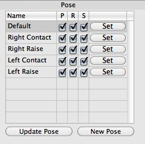

Pose TagThe pose tag is very handy when it come so record character poses which are often used. For example you can record a "Fist" pose for the right hand of your character. Whenever you will need your character make a fist you just have to click onto the "Set" button in the pose tag and your character will make a fist. To create a new pose tag you first have to select the objects you want to record. For example if you want to record the pose of a hand select the wrist joint of the hand. Now add a pose tag to the selected wrist joint. If you now click on the "New Pose" button in the pose tag a new pose is recorded. Hereby the rotation/scale and position of all child objects of the wrist joint will be recorded.  If you now want to return to that pose you just have to click on the "Set" button in the pose manager. While poses are mainly used in character animation you can use them to record the position/scale/orientation of every object in your scene. So you can also use them to record certain nice camera positions to view your scene for example. Properties
|